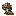
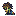
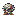
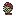
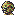

The five forecast heads
Native 1x

Integer 4x detail
16×16 UI icons for the dusk forecast: one head and the expected count for each enemy kind. Static icons; final visual review pending.
5 of 5 icons. All recorded QA checks pass. The HUD is not relit; world-night samples below are only lighting references.
Contract · Checks · Review log · All packs
Native 1x
Integer 4x detail




Enemy identity at draw scale 1




Enemy identity at draw scale 1




Enemy identity at draw scale 1




Enemy identity at draw scale 1




Enemy identity at draw scale 1


breaker-r1: Non-selected diagnostic return; superseded by the internally inspected native recipes. Excluded from the final delivered inventory.
breaker-r2: Non-selected diagnostic return; superseded by the internally inspected native recipes. Excluded from the final delivered inventory.
giant-r1: Non-selected diagnostic return; superseded by the internally inspected native recipes. Excluded from the final delivered inventory.
giant-r2: Non-selected diagnostic return; superseded by the internally inspected native recipes. Excluded from the final delivered inventory.
giant-r3: Non-selected diagnostic return; superseded by the internally inspected native recipes. Excluded from the final delivered inventory.
giant-r4: Non-selected diagnostic return; superseded by the internally inspected native recipes. Excluded from the final delivered inventory.
tank-r1: Non-selected diagnostic return; superseded by the internally inspected native recipes. Excluded from the final delivered inventory.
tank-r2: Non-selected diagnostic return; superseded by the internally inspected native recipes. Excluded from the final delivered inventory.
tank-r3: Non-selected diagnostic return; superseded by the internally inspected native recipes. Excluded from the final delivered inventory.
tank-r4: Non-selected diagnostic return; superseded by the internally inspected native recipes. Excluded from the final delivered inventory.